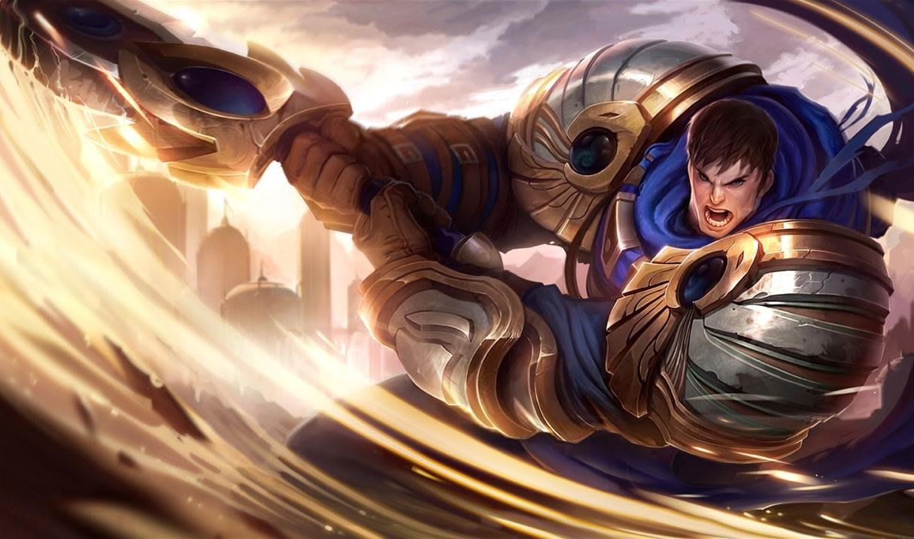

Top Lane
Top Lane is a vast role, with a variety of different champions to choose from. Most are melee fighters that you want to keep away from you at all costs. They are great at dueling other champions, but tend to be weaker when fighting more than one person. I’ll be discussing 2 different top lane champions: Fiora, The Grand Duelist and Garen, The Might of Demacia.
Fiora

Basic Abilities
Fiora’s passive is Duelist’s Dance. Fiora identifies vitals on enemy champions. If she hits these vitals, she gains movement speed, heals, and does extra damage. There are 4 possible vital positions, in front enemy champion, behind them, to their left, and to their right.
Fiora’s first basic ability is Lunge. She dashes forward and strikes the nearest enemy. This can also hit her vitals is a good way for her to hit vitals. It also serves as good mobility and allows her to move around quite easily.
Fiora’s second basic ability is Riposte. For 0.75 seconds, Fiora becomes immune to all damage as well as crowd control (abilities that make you unable to move). Afterwards, she strikes directly in front of her, doing damage as well as slowing any enemies hit. If she got hit by in those 0.75 seconds, the strike will stun instead of slowing.
Fiora’s third basic ability is Bladework. Fiora’s next auto attack will slow the enemy, and the one after that will critically strike for more damage.
Ultimate
Fiora’s ultimate is Grand Challenge. She reveals all 4 vitals on an enemy champion, if she hits all 4 vitals she creates a zone around them, healing Fiora and her team. She also gains movement speed while around the champion.
Garen

Basic Abilities
Garen’s passive is Perseverance. After not taking damage from enemy champions, Garen slowly regenerates a portion of his maximum health.
Garen’s first basic ability is Decisive Strike. Garen gains movement speed and his next attack will do more damage and silence the enemy champion for 2 seconds. (You can’t cast abilities while silenced)
Garen’s second basic ability is Courage. Garen gains a shield and takes reduced damage for a few seconds. It will also give him 80% tenacity for a brief second. (Tenacity is resistance to crowd control)
Garen’s third basic ability is Judgement. Garen spins his sword around himself, dealing damage to all nearby enemies.
Ultimate
Garen’s ultimate is Demacian Justice. Garen deals damage to a target enemy champion that does more damage the lower hp the champion is.
You can read more about Fiora and Garen on the official League of Legends website.